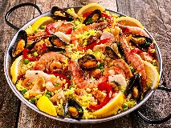
Paellawiki-fr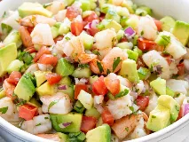
Cevichewiki-fr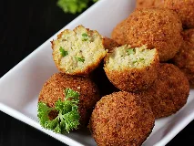
Falafelwiki-fr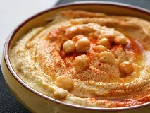
Houmouswiki-fr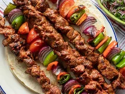
Kebabbing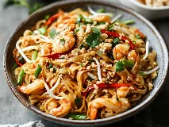
Pad thaïwiki-fr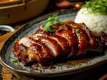
Canard laqué de Pékinwiki-fr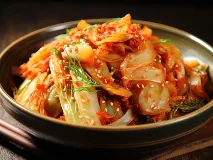
Kimchiwiki-fr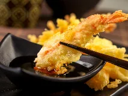
Tempurawiki-fr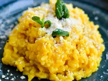
Risottowiki-fr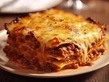
Lasagneswiki-fr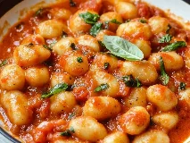
Gnocchiwiki-fr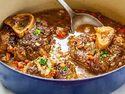
Osso bucowiki-fr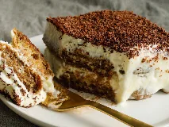
Tiramisuwiki-fr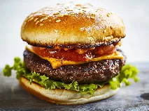
Hamburgerwiki-fr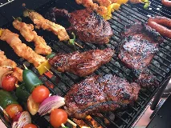
Barbecuewiki-fr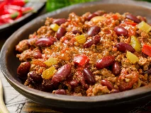
Chili con carneECHEC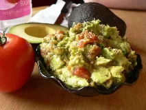
Guacamolewiki-fr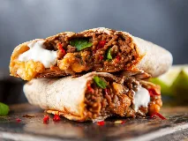
Burritobing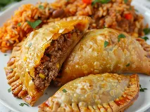
Empanadawiki-fr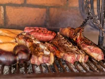
Asadowiki-fr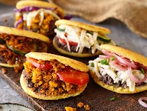
Arepawiki-fr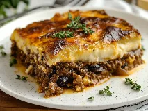
Moussakawiki-fr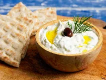
Tzatzikiwiki-fr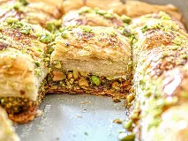
Baklavawiki-fr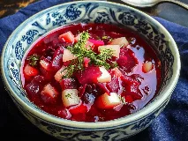
Bortschwiki-fr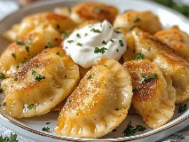
Pierogiwiki-fr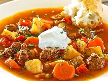
Goulashwiki-fr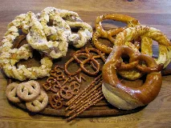
Bretzelwiki-fr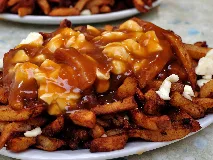
Poutinewiki-fr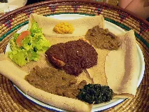
Injerawiki-fr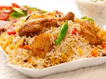
Biryaniwiki-fr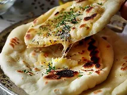
Naanwiki-fr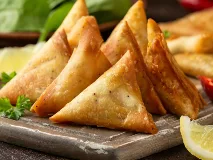
Samoussawiki-fr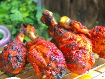
Tandooriwiki-fr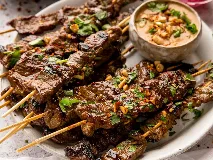
Sataywiki-fr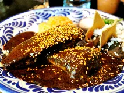
Mole poblanowiki-fr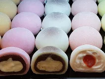
Mochiwiki-fr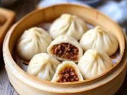
Baoziwiki-fr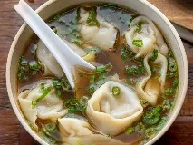
Wontonwiki-fr